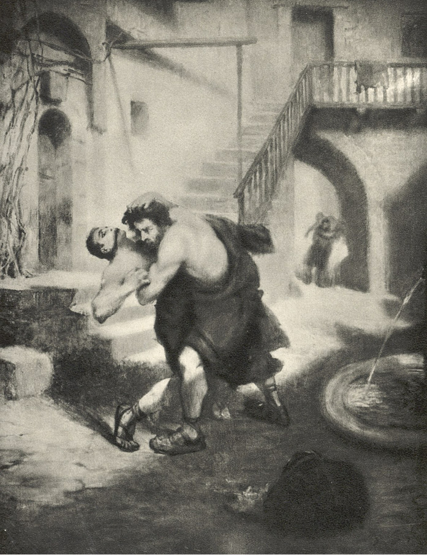

XXII
Vinitius teprve v síni pochopil všecku obtíž podniku. Dům byl veliký, několikapatrový, jeden z takových, jakých bylo na tisíce vystavěno v Římě v naději na zisk z pronájmu bytů; obyčejně pak bylo stavěno s takovým chvatem a ledabylostí, že nebylo téměř roku, aby několik z nich se nezřítilo na hlavy nájemníků. Byly to hotové úly, příliš vysoké a příliš úzké, plné komůrek a kobek, ve kterých se tísnilo obyvatelstvo chudé, ale přitom i velice četné. V městě, ve kterém neměly mnohé ulice názvů, domy ony byly bez čísel; majitelé svěřovali vybírání nájemného otrokům, ti však, nejsouce donuceni místními úřady, aby sdělovali jména obyvatelů, často jich neznali sami. Poptati se na někoho v takovém domě bývalo nejednou nesmírně obtížno, obzvláště když u vrat nebylo dohližitele.
Vinitius dostal se s Krotonem po dlouhé, chodbě se podobající předsíni na úzký, ze čtyř stran zastavěný dvoreček, jenž tvořil druh všem domům společného atria s fontánou uprostřed, jejíž proud padal do kamenné nádržky, zazděné do země. U všech zdí vedly nahoru vnější schody, částečně kamenné, částečně dřevěné, spojující pavlače, z nichž se vcházelo do bytů. Dole byly rovněž byty, některé opatřeny dřevěnými dveřmi, jiné odděleny ode dvora pouze vlněnými, většinou roztřepenými a roztrhanými nebo spravovanými závěsy.
Byla časná hodina a na dvorečku nebylo živé duše. Patrně v celém domě ještě všichni spali, vyjímaje ty, kteří se vrátili z Ostriana.
„Co uděláme, pane?“ ptal se Kroto, zastavuje se.
„Počkejme zde, snad se někdo objeví!“ odvětil Vinitius. „Není třeba, aby nás na dvoře někdo viděl.“
Ale zároveň myslil na to, že Chilonova rada byla praktická. Kdyby byl měl s sebou větší hlouček otroků, bylo by možno obsaditi vrata, která jak se zdálo, byla jediným východem, a prohledati všecky byty, kdežto takto bylo záhodno ihned vniknouti do příbytku Lygiina, neboť jinak mohli křesťané, jichž v tom domě zajisté nebyl nedostatek, ji varovati, že se po ní pátrá. Vzhledem k tomu bylo nebezpečno třebas jen vyptávati se u cizích osob. Vinitius chvíli se rozmýšlel, nemá-li se vrátiti pro otroky, když vtom od jednoho ze závěsů, uzavírajících příbytky další, vyšel člověk se sítem v ruce a přistoupil k fontáně.
Mladý člověk na první mžik oka poznal Ursa.
„Toť Lyg!“ zašeptal Vinitius.
„Mám mu hned zpřerážet kosti?“
„Počkej!“
Ursus jich nezahlédl, protože stáli v přítmí síně, a začal klidně oplachovati ve vodě zeleniny, které byly v sítu. Bylo zjevno, že po noci, cele strávené na hřbitově, hodlal z nich připraviti snídani. Za chvíli, dokončiv svoji práci, vzal mokré síto a zmizel i s ním za závěsem. Kroto a Vinitius vykročili za ním, domnívajíce se, že se dostanou přímo do příbytku Lygiina.
Byl tedy jejich údiv nesmírný, když zpozorovali, že závěs odděloval ode dvora nikoli příbytek, nýbrž druhou tmavou chodbu, na jejímž konci bylo viděti zahrádku, skládající se z několika cypřišů, několika myrtových keřů, a pak malý domek, přilepený na slepou zadní zeď jiné budovy.
Oba okamžitě pochopili, že je to pro ně okolnost příznivá. Na dvoře mohlo dojít ke sběhu všech obyvatelů, kdežto stranou položený domek usnadňoval podnik. Budou brzy hotovi s obránci či vlastně s Ursem, a pak stejně rychle dostanou se s uchvácenou Lygií na ulici a tam si již nějak pomohou. Pravděpodobně jich nikdo nezastaví, a i kdyby byli zastaveni, řeknou, že jde o uprchlou ženu rukojmí Caesarovu; v tom případě pak Vinitius nechá se poznati od vigilů a vyzve je ku pomoci.
Ursus již skoro vcházel do domku, když tu ohlas kroků vzbudil jeho pozornost, a proto se zastavil, a spatřiv dvé lidí, položil síto na zábradlí a obrátil se k nim.
„Co zde hledáte?“ ptal se.
„Tebe!“ odvětil Vinitius.
Pak, otočiv se ke Krotonovi, zvolal rychlým, tichým hlasem:
„Zab jej!“
Kroto se na něho vrhl jako tygr a v jediném okamžiku, nežli Lyg byl s to, aby se vzpamatoval nebo rozeznal nepřátele, popadl jej do svých ocelových paží.
Ale Vinitius byl příliš jist jeho nadlidskou silou, aby vyčkal konec zápasu, a tak ponechav je sobě samým, přiskočil ke dveřím domku, kopl do nich a octl se v jizbě poněkud tmavé, nicméně osvětlené ohněm, jenž hořel v krbu. Záře toho plamene padala, přímo na Lygii. Druhou osobou, sedící u ohniště, byl onen stařec, který provázel dívku a Ursa na cestě z Ostriana.
Vinitius vpadl dovnitř tak náhle, že nežli jej mohla Lygie poznati, uchopil ji kolem pasu, a vyzvednuv ji, hnal se opět ke dveřím. Starci se sice podařilo, že se postavil před ně, ale on, přitisknuv dívku jednou paží na prsa, druhou volnou rukou jej odstrčil. Kápě mu spadla s hlavy a tu při pohledu na tu známou, ale v tomto okamžiku strašlivou tvář ustydla Lygii krev v žilách zděšením a hlas jí zemřel v hrdle. Chtěla volati o pomoc, ale nemohla. Rovněž marně chtěla zachytiti se veřejí, aby se vzepřela. Její prsty svezly se po kameni a byla by pozbyla vědomí, nebýti hrůzného divadla, jaké jí padlo do očí, když se s ní Vinitius vyřítil do zahrady.
Ursus totiž držel v rukou jakéhosi člověka, úplně zvráceného nazad se svěšenou hlavou a s ústy zalitými krví. Spatřiv je, uděřil pěstí ještě jednou do té hlavy a v jediném mžiku přiskočil k Vinitiovi jako rozzuřená zvěř.
„Smrt!“ pomyslil si mladý patricius.

Ursus totiž držel v rukou jakéhosi člověka, úplně zvráceného nazad.
A pak uslyšel jako ve snách výkřik Lygiin: „Nezabíjej!“ – načež ucítil, že cosi jako úder blesku srazilo mu ruce, jimiž ji objímal, konečně se s ním zatočila země a denní světlo zhaslo mu v očích.
Nicméně Chilon, ukrytý v zákoutí za nárožím, čekal, co se stane, poněvadž zvědavost bojovala v něm se strachem. Myslil také na to, že podaří-li se jim, aby Lygii unesli, bude s výhodou zůstati u Vinitia. Urbana se již nebál, neboť byl také jist, že Kroto jej zabije. Naproti tomu doufal, že kdyby na ulicích až dosud prázdných nastal shon, kdyby křesťané či jacíkoliv lidé chtěli se postaviti Vinitiovi na odpor, promluví k nim jako zástupce úřadu, jako vykonavatel vůle Caesarovy a v krajní potřebě vyzve vigily na pomoc mladému patriciovi proti pouliční luze a tím si získá nové přízně. V duchu stále uvažoval, že jednání Vinitiovo jest nerozvážné; maje však na zření strašlivou sílu Krotonovu, připouštěl, že se dílo může zdařiti. „Kdyby s nimi bylo zle, sám tribun ponese dívku a Kroto mu cestu proklestí.“ Avšak čas se mu nějak dloužil; byl znepokojen tichem v síni, na kterou se díval zpovzdálí.
„Nepřipadnou-li na její úkryt a strhnou-li povyk, vyplaší ji.“
A myšlenka na to nebyla mu ostatně trapnou, neboť chápal, že v té případnosti bude ho Vinitius opětně potřebovati a pak se mu zase podaří vylákati z něho slušnou sumu sestercií.
„Ať učiní ti tam cokoli,“ řekl si, „pro mne to učiní, ač nikdo ani toho netuší… Bohové, bohové, jen mi dopřejte…“
Ale pojednou ustal, neboť se mu zdálo, že se cosi ze síně vynořilo, i přitisknuv se ke zdi, začal se dívati, taje dech v prsou.
A nemýlil se, jelikož se ze síně napolo vychýlila jakási hlava a začala se rozhlížeti.
Za chvíli však zmizela.
„To byl Vinitius nebo Kroto,“ napadlo Chilona. „Jestliže však se dívky zmocnili, proč ta nekřičí a k čemu vyhlížejí na ulici? S lidmi se musí beztak potkat, protože nežli dojdou do Carin, rozvíří se ruch ve městě. Co to?! U všech nesmrtelných bohů…!“
A pojednou se mu zbytky vlasů zježily na hlavě.
Ve dveřích se ukázal Ursus, maje Krotonovo tělo přehozeno přes ruku, a rozhlédnuv se ještě jednou, začal s ním běžeti prázdnou ulicí k řece.
Chilon se u zdi zploštil jako kus omítky.
„Je po mně veta, zahlédne-li mne!“ napadlo ho.
Ale Ursus rychle přeběhl mimo nároží a zmizel za následujícím domem. Chilon pak, nečekaje déle, dal se na útěk příční uličkou, drkotaje zuby zděšením, se hbitostí, která by mohla překvapiti i u mladíka.
„Spatří-li mne zpovzdálí, až se bude vracet, dožene mne a zabije!“ mluvil k sobě. „Zachraň mne, Die, zachraň, Apollone, zachraň, Herme, zachraň, Bože křesťanů! Opustím Řím, vrátím se do Mesembrie, ale vysvoboďte mne z rukou toho démona!“
A ten Lyg, jenž zabil Krotona, připadal mu v té chvíli opravdu jako nějaká nadlidská bytost. Utíkaje, myslil si, že to může býti nějaký bůh, který na sebe vzal podobu barbarovu. V tom okamžiku věřil na všechny bohy světa a ve všecky báje, kterým se svého času posmíval. Také mu proletovalo hlavou, že Krotona mohl zabíti Bůh křesťanů, a vlasy opět se mu ježily na hlavě při myšlence, že se střetl s takovou mocností.
Teprve, když proběhl několika postranními uličkami a zahlédl několik dělníků, ubírajících se zdaleka proti němu, poněkud se upokojil. V prsou se mu již tajil dech, pročež usedl na práh domu a začal si cípem pláště utírati čelo, pokryté potem.
„Jsem stár a potřebuji klidu!“ řekl.
Lidé, jdoucí proti němu, zabočili do jakési vedlejší uličky a jej opět obklopila prázdnota. Město ještě spalo. Zrána nastával ruch časněji v zámožnějších čtvrtích, kde otroci bohatých domů musili brzy vstávati, kdežto v těch, které byly obývány svobodným obyvatelstvem, živeným na útraty pánů, tedy povalečským, probouzeli se lidé dosti pozdě, zvláště v zimě. Chilon, proseděv nějakou dobu na prahu, ucítil citelné chladno, proto vstal, a přesvědčiv se, že neztratil měšce, který dostal od Vinitia, volnějším již krokem zamířil k řece.
„Snad uvidím někde Krotonovo tělo,“ řekl si. „Bohové! Ten Lyg, je-li člověkem, mohl by si za jediný rok vydělat miliony sestercií, neboť zardousil-li Krotona jako štěně, kdo ho přemůže? Za každé vystoupení v aréně dali by mu tolik zlata, co sám váží. Tu dívku hlídá lépe nežli Cerberus1 peklo. Ale aby ho to peklo také pohltilo! Nechci s ním nic mít! Jest až příliš silných kostí! Než, co si tu počít? Stala se strašlivá věc. Zpřelámal-li takovému Krotonovi kosti, jistě i duše Vinitiova kvílí tam nad tím prokletým domem, čekajíc na pohřeb. U Kastora, to je přece patricius, přítel Caesarův, příbuzný Petroniův, pán známý po celém Římě a vojenský tribun! Jeho smrt jim tak hladce neprojde…! Což kdybych se na příklad odebral do ležení praetoriánů nebo k vigilům…?“
Tu se odmlčel a začal se rozmýšleti, ale za chvíli řekl:
„Běda mi! Kdo jej přivedl do toho domu, ne-li já…? Jeho osvobozenci i otroci vědí, že jsem k němu chodíval, a někteří vědí, za jakým účelem. Co se stane, až na mne uvalí podezření, že jsem zúmyslně mu ukázal dům, v němž jej potkala smrt? Byť se i potom ukázalo u soudu, že jsem si jí nepřál, jistě řeknou, že jsem její příčinou… Vždyť je to přece patricius, a tudíž mi to neprojde beztrestně, děj se co děj! Ale kdybych potichounku opustil Řím a přestěhoval se někam daleko, upadl bych v podezření tím větší.“
Bylo zle, ať tak či onak. Šlo pouze o to, aby si vybral zlo menší. Řím byl ohromné město, ale Chilon cítil, že mu v něm může býti příliš těsno. Každý jiný mohl by zajisté jíti rovnou k praefektovi vigilů, vylíčiti, co se stalo, a pak, byť i na něho padlo nějaké podezření, vyčkati klidně vyšetřování. Nicméně všecka minulost Chilonova byla toho druhu, že jakákoli bližší známost, ať již s praefektem města, nebo s praefektem vigilů, jistě by mu způsobila velmi vážné nesnáze a tím také odůvodnila všeliké podezření, jaké by mohlo napadnouti úředníky.
Z druhé strany zase utéci – to bylo utvrditi Petronia v domněnce, že Vinitius byl zrazen a zavražděn po předchozí úmluvě. Petronius byl přece člověk mocný, který mohl míti ke službám policii po celé říši a který zcela určitě by se vynasnažil vypátrati viníky, byť i na konci světa. Nicméně Chilonovi přišlo na mysl, neměl-li by se odebrati přímo k němu a vylíčiti mu, co se přihodilo. Ano, to byl nejlepší způsob! Petronius byl člověk klidný a Chilon mohl býti jist aspoň tím, že jej vyslechne do konce. Petronius, který znal záležitost od počátku, spíše by uvěřil v nevinu Chilonovu nežli praefekti.
Aby však se mohl k němu odebrati, bylo nutno věděti najisto, co se stalo s Vinitiem. Viděl sice Lyga, plížícího se k řece s tělem Krotonovým, ale nic více. Vinitius mohl býti zabit, ale mohl také býti raněn nebo chycen. Teprve nyní napadlo Chilona, že by se křesťané jistě neodvážili zabíti člověka tak mocného, Augustiana a vysokého hodnostáře vojenského, jelikož čin toho druhu mohl by přivoditi jejich všeobecné pronásledování. Bylo pravděpodobnější, že byl zadržen násilně, aby Lygii byl dán čas k novému úkrytu na jiném místě.
Ta myšlenka naplnila Chilona útěchou.
„Nerozsápal-li ho ten lygijský drak v prvním záchvatu, pak je naživu, a je-li naživu, vydá sám svědectví, že jsem ho nezradil, a pak nejen mi nic nehrozí, nýbrž (ó, Herme, doufej opět ve dvě jalovičky!) otvírá se přede mnou nové pole… Mohu dát vědět jednomu z osvobozenců, kde má hledat pána, a je pak jeho věcí, odebere-li se ke praefektovi, čili nic, jen když já se k němu nebudu ubírat…! Také mohu jít k Petroniovi a doufat v odměnu… Hledal jsem Lygii, teď budu hledat Vinitia a pak zase Lygii… Je však záhodno vědět především, je-li živ, či zabit.“
Tu mu proletělo hlavou, že by mohl v noci zajíti k pekaři Demasovi a zeptati se na to Ursa. Ale toho úmyslu okamžitě se vzdal. Nechtěl raději mít ničeho s tím Ursem. Mohl se právem domnívati, že nezabil-li Ursus Glauka, byl patrně varován někým ze starších u křesťanů, jemuž se vyznal ze svého záměru, protože je to hanebný podnik a že chtěl jej k tomu přemluviti jakýsi zrádce. Ostatně, při pouhé vzpomínce na Ursa probíhal Chilonem mráz po celém těle. Naproti tomu si myslil, že k večeru pošle Euritia pro zprávy do domu, v němž se událost přihodila. Zatím potřeboval se posilniti, vykoupati a odpočinouti si. Probdělá noc, cesta do Ostriana a útěk ze Zatibří unavily jej opravdu nad všeliké pomyšlení.
Jedno jej stále těšilo: že měl u sebe dva měšce: ten, jejž mu dal Vinitius doma, a pak ten, jejž mu hodil na zpáteční cestě ze hřbitova. Vzhledem na tuto šťastnou okolnost, jakož i pro všecko to rozčilování, jaké prožil, umínil si, že pojí bohatě a napije se lepšího vína nežli obyčejně.
A když konečně nadešla hodina otevření vinárny, provedl to v míře tak značné, že zapomněl na lázeň. Chtělo se mu především spát a ospalost ho zbavila sil do té míry, že se vrátil úplně potácivým krokem do svého bytu na Subuře, kde na něho čekala otrokyně, zakoupená za peníze Vinitiovy.
Tam, vstoupiv do cubicula, tmavého jako liščí doupě, vrhl se na lože a okamžitě usnul.
Probudil se až večer či vlastně vzbudila jej otrokyně, vybízejíc jej, aby vstával, protože jej někdo hledá a rád by s ním mluvil v naléhavé věci.
Bdělý Chilon vzpamatoval se okamžitě, přehodil na sebe rychle plášť s kápí, a rozkázav otrokyni, aby odstoupila stranou, vyhlédl napřed opatrně ven.
A strnul, neboť dveřmi cubicula spatřil obrovskou postavu Ursovu!
Při pohledu na něho ucítil, že mu nohy a hlava chladnou jako led, srdce přestává v prsou tlouci a po kříži mu pobíhají roje mravenců… Nějakou dobu nemohl promluviti, potom však, drkotaje zuby, řekl, či spíše zaúpěl:
„Siro, nejsem doma… neznám… toho… dobrého člověka…“
„Řekla jsem mu, že jsi doma, pane, a spíš,“ odvětila dívka, „on pak žádal, abych tě vzbudila…“
„Ó, bohové…! Dám tě…“
Ale Ursus, jako by jej bylo již omrzelo otálení, přistoupil ke dveřím cubicula, a shýbnuv se, vstrčil hlavu dovnitř.
„Chilone Chilonide!“ řekl.
„Pax tecum, pax, pax!2“ odpověděl Chilon. „Ó, nejlepší z křesťanů! Ano, jsem Chilon, ale to je omyl… Neznám tě!“
„Chilone Chilonide!“ opakoval Ursus. „Tvůj pán Vinitius tě vybízí, aby ses k němu odebral společně se mnou!“